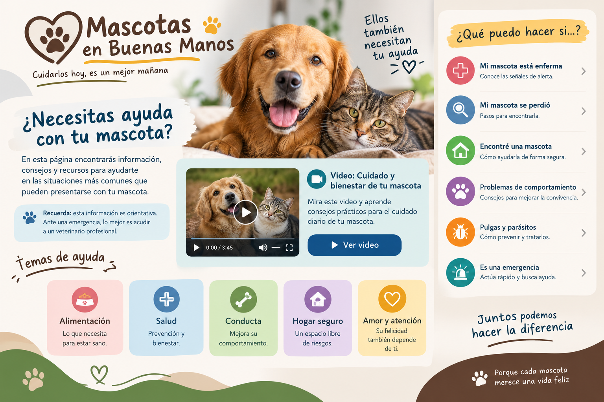

Cachorros en Acción
Cachorritos llenos de energía y ternura
Las mascotas llenan nuestro hogar de alegría y compañía. Cada animal tiene necesidades diferentes, por eso es importante conocerlas, respetarlas y brindarles los cuidados necesarios para que puedan crecer sanos y felices.
